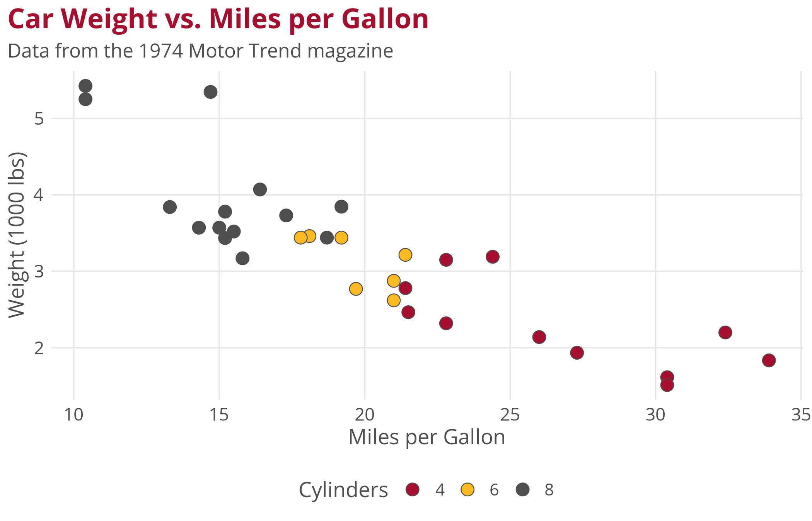
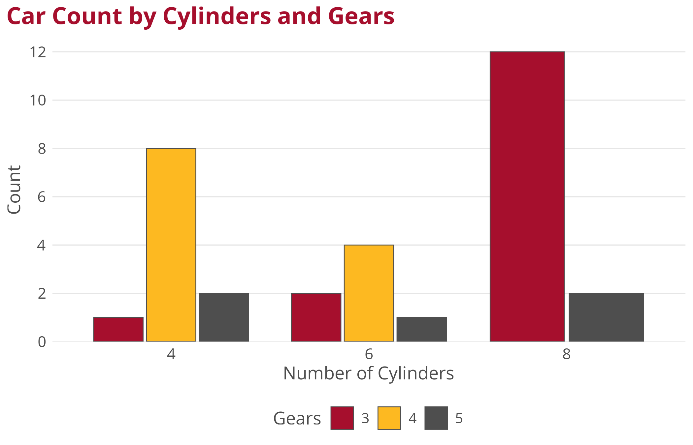
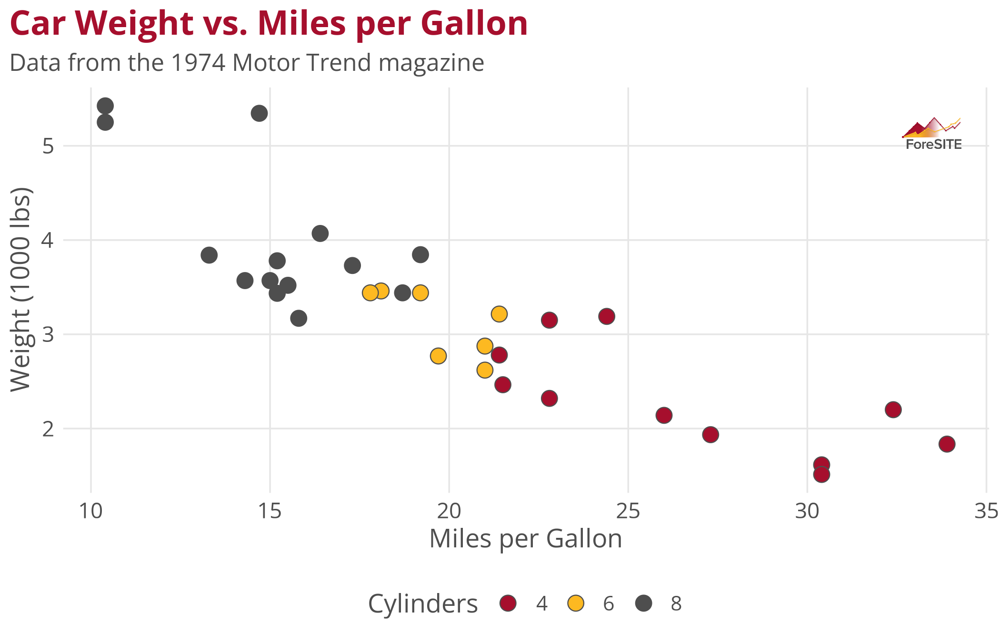
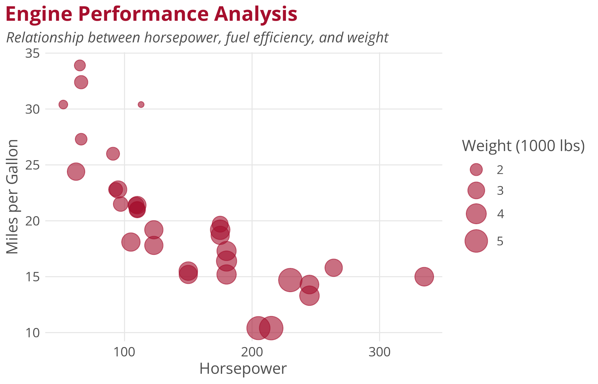
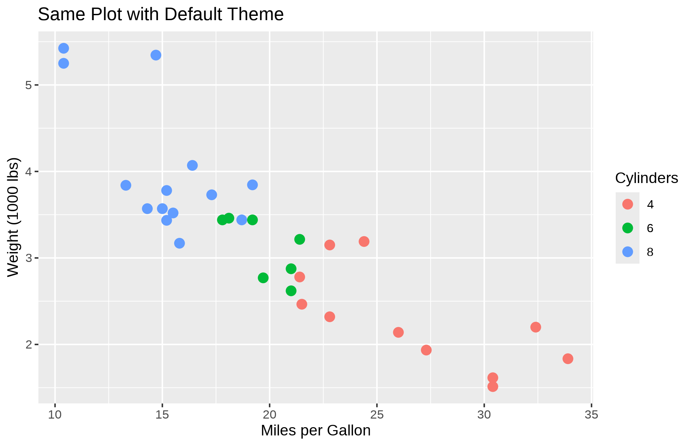

Overview
This vignette demonstrates how to integrate ggplot2 and plotly visualizations with brand themes using the rbranding package. The package provides functions to:
- Load brand configuration from
_brand.ymlfiles - Apply brand colors and typography to ggplot2 themes
- Add brand logos to plots
- Reset themes when needed
The examples use the ForeSITE brand, which ships with the package.
Getting Started
First, let’s load the required packages:
Step 1: Initialize and Load Brand Configuration
In a real project, you initialize the branding configuration once and then download the latest brand file:
# Initialize branding (creates rbranding_config.yml and placeholder _brand.yml)
brand_init()
# Get the latest brand file from the repository
get_brand_public()
# Optionally, install the ggplot2 example template in your working directory
get_template("ggplot2")For this vignette, we use the ForeSITE _brand.yml and logos bundled with the package, copied into a temporary directory:
## Use a temporary directory as the knit root for the entire document so that
## subsequent chunks are evaluated with `temp_dir` as their working directory.
temp_dir <- file.path(tempdir(), "rbranding-ggplot2")
dir.create(temp_dir, showWarnings = FALSE)
knitr::opts_knit$set(root.dir = temp_dir)
brand_dir <- system.file("brand_files", package = "rbranding")
invisible(file.copy(
list.files(brand_dir, full.names = TRUE),
temp_dir,
recursive = TRUE,
overwrite = TRUE
))
brand_file <- file.path(temp_dir, "_brand.yml")The brand defines three official colors, which we will also use for the data:
Step 2: Set the ggplot2 Theme
Apply the brand theme to ggplot2. This will set colors and fonts according to your brand configuration:
brand_set_ggplot(brand_file)
#> Brand theme applied successfully!
#> Custom font loaded: open_sansThe brand theme is a regular ggplot2 theme, so you can fine-tune it with theme_update(). Here we increase the text size for readability, use a light grid so the data stand out, and highlight titles in ForeSITE crimson:
theme_update(
text = element_text(size = 13),
plot.title = element_text(size = 17, face = "bold", colour = foresite[["crimson"]]),
plot.subtitle = element_text(size = 12, colour = foresite[["dark-gray"]]),
plot.title.position = "plot",
axis.text = element_text(size = 11),
panel.grid.major = element_line(colour = "#E6E6E6", linewidth = 0.4),
panel.grid.minor = element_blank(),
legend.position = "bottom"
)Step 3: Create ggplot2 Visualizations
Now create some plots that will automatically use your brand theme. We map groups to the brand colors with scale_*_manual(). Gold has low contrast on white (1.7:1), so points and bars get a thin dark gray outline to keep them distinguishable:
p1 <- ggplot(mtcars, aes(x = mpg, y = wt, fill = factor(cyl))) +
geom_point(shape = 21, size = 3.5, stroke = 0.4, colour = foresite[["dark-gray"]]) +
scale_fill_manual(values = unname(foresite)) +
labs(
title = "Car Weight vs. Miles per Gallon",
subtitle = "Data from the 1974 Motor Trend magazine",
x = "Miles per Gallon",
y = "Weight (1000 lbs)",
fill = "Cylinders"
)
print(p1)
p2 <- ggplot(mtcars, aes(x = factor(cyl), fill = factor(gear))) +
geom_bar(position = position_dodge(width = 0.8), width = 0.75,
colour = foresite[["dark-gray"]], linewidth = 0.3) +
scale_fill_manual(values = unname(foresite)) +
scale_y_continuous(breaks = seq(0, 12, by = 2), expand = expansion(mult = c(0, 0.05))) +
labs(
title = "Car Count by Cylinders and Gears",
x = "Number of Cylinders",
y = "Count",
fill = "Gears"
) +
theme(panel.grid.major.x = element_blank())
print(p2)
Step 4: Add Brand Logo (Optional)
If your brand configuration includes a logo, you can add it to your plots. size is the logo’s height as a fraction of the plot:
p1_with_logo <- p1 + brand_add_logo(x = 0.94, y = 0.88, size = 0.16)
print(p1_with_logo)
Step 5: Interactive Plots with plotly
You can also create interactive versions of your plots using plotly:
Step 6: Advanced Theming
You can customize specific aspects of the theme while maintaining brand consistency:
p3 <- ggplot(mtcars, aes(x = hp, y = mpg, size = wt)) +
geom_point(colour = foresite[["crimson"]], alpha = 0.6) +
scale_size_continuous(range = c(2, 9)) +
labs(
title = "Engine Performance Analysis",
subtitle = "Relationship between horsepower, fuel efficiency, and weight",
x = "Horsepower",
y = "Miles per Gallon",
size = "Weight (1000 lbs)"
) +
theme(
plot.subtitle = element_text(face = "italic"),
legend.position = "right"
)
print(p3)
Step 7: Reset Theme
When you’re done with the brand theme, you can reset to the default ggplot2 theme:
# Reset to original theme
brand_reset_ggplot()
#> ggplot2 theme reset to previous state.
# Create a plot with default theme to show the difference
p4 <- ggplot(mtcars, aes(x = mpg, y = wt)) +
geom_point(aes(color = factor(cyl)), size = 3) +
labs(
title = "Same Plot with Default Theme",
x = "Miles per Gallon",
y = "Weight (1000 lbs)",
color = "Cylinders"
)
print(p4)
Best Practices
-
Set theme early: Call
brand_set_ggplot()at the beginning of your analysis - Test font loading: Custom fonts may not work in all environments
- Use consistent colors: Stick to the brand palette for consistency, and check contrast (e.g., outline light colors such as gold)
-
Size figures for their destination: Match
fig.widthto the width at which the figure is displayed so text is not scaled down -
Reset when needed: Use
brand_reset_ggplot()to return to default themes - Logo placement: Position logos where they don’t interfere with data
Troubleshooting
Common Issues
- Font loading fails: Some environments may not support custom Google Fonts
-
Text looks too small: The figure is wider than where it is displayed, or
showtextrenders at a different resolution than the figure; setfig.showtext = TRUEin knitr/Quarto documents -
Logo not found: Ensure the logo path in
_brand.ymlis correct and the file exists -
Colors not applied: Check that your
_brand.ymlfile follows the correct schema
Solutions
# Disable custom fonts if having issues
brand_set_ggplot(use_fonts = FALSE)
# Check brand configuration
doc <- yaml::read_yaml("_brand.yml")
str(doc$color)
str(doc$typography)Conclusion
The rbranding package makes it easy to create consistent, branded visualizations across your organization. By following this workflow, you can ensure that all your ggplot2 and plotly charts maintain brand consistency while being accessible and professional.
For more information about the brand.yml schema, visit: https://github.com/posit-dev/brand-yml/